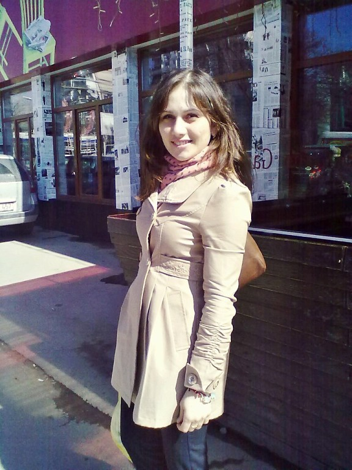
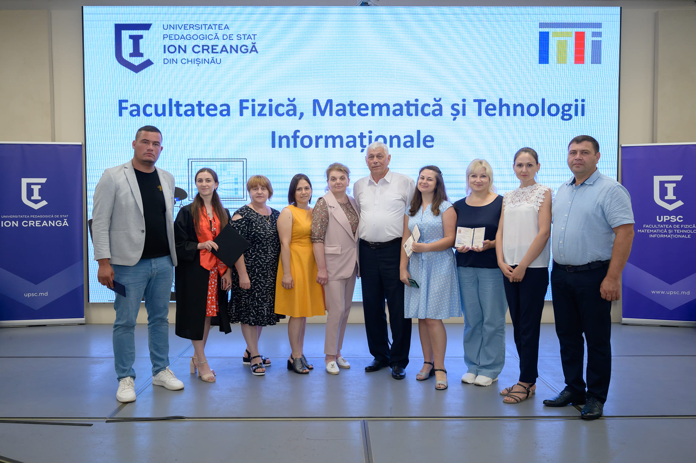
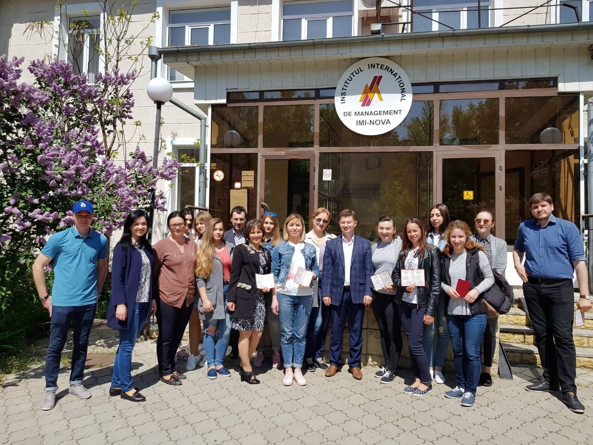
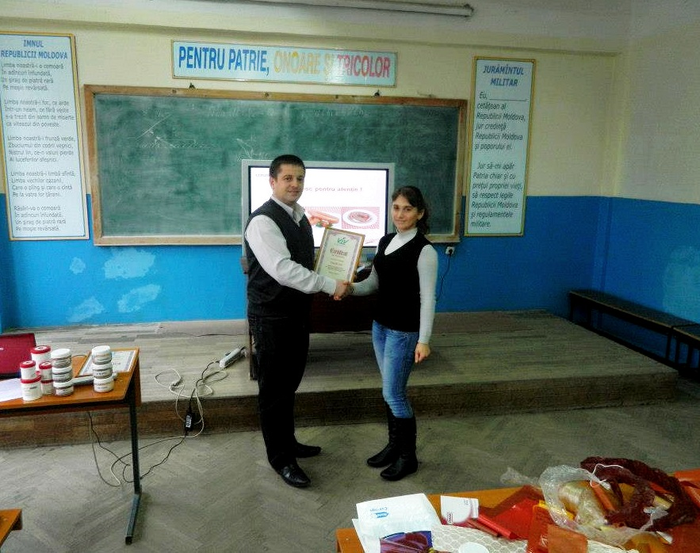

Topciu Inna
|
Profesoară
Romana, Rusa, Franceza topciuinna@gmail.com +37369465300 |
Sunt profesoară de fizică la Liceul Teoretic "Ion Creangă" Hîrbovăț. Deși am absolvit Universitatea Tehnică a Moldovei la Facultatea Tehnologie și Management în Industria Alimentară în anul 2013, destinul m-a adus alături de copii, pentru a-i călăuzi în lumea cunoștințelor. Aici am beneficiat de oportunitatea de a participa la Cursurile de instruire în domeniul IT, desfășurate de către Tekwill în fiecare școală, datorită cărora germenele în domeniul IT a încolțit. |
|  |  |  |  |
Experiența de lucru
Profesoară de fizică
Septembrie 2023 - PrezentActivez în calitate de profesoară de fizică la IÎ Liceul Teoretic „Ion Creangă” Hîrbovăț.
Secretară
August 2021 - August 2023Am lucrat la IÎ Liceul Teoretic „Ion Creangă” Hîrbovăț în calitate de secretară.
Operator-contabil
Noiembrie 2017 - August 2021Am fost angajată la „Anina” SRL, unde am activat în funcție de Operator-contabil.
Tehnolog în Industria Alimentară
Iulie 2013 - Septembrie 2015Am activat în calitate de Tehnolog al secției de semifabricate la abatorul „VisPas și Co” din satul Hîrbovăț.
Educație
Studii de Masterat
Septembrie 2021 - Iunie 2023Studii de master în Fizică.
Studii de Licență
Septembrie 2009 - Iunie 2013Studii de licență în Industria Alimentară.